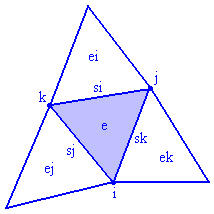
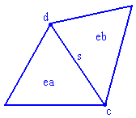

Output files
EasyMesh creates three output files with the extensions:
These extensions are added to the input file name. If you have NAME.d as input file, the following files will be created after generation:
where i, j, k are nodes belonging to the element, ei, ej and ek are the neighbouring elements, while si, sj and sk are the element sides. xV and yV are the coordinates of the element circumcenter, which is also the Voronoi polygon node.
The marker is useful only when the domain consists of more than one material. If ei, ej or ek equals to -1, it means that element lies on the boundary.

where c and d are the starting and ending point of the side, ea and eb are the elements on the left and on the right of the side. If eb equals to -1, it means that the right element does not exists, so the side is on the boundary.
